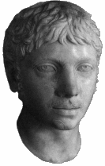

Ancient Rome

Elagabalus
I’m Too Sexy for My Toga
A Roman emperor, a sun god, and a wardrobe calculated to horrify the Senate.
Open case →Evidence classification / Department 08
Emperors, gods & imperial absurdities. Articles by Peter Mangiaracina.